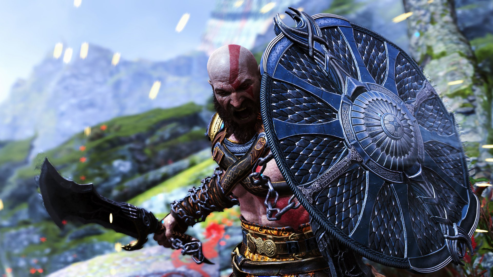
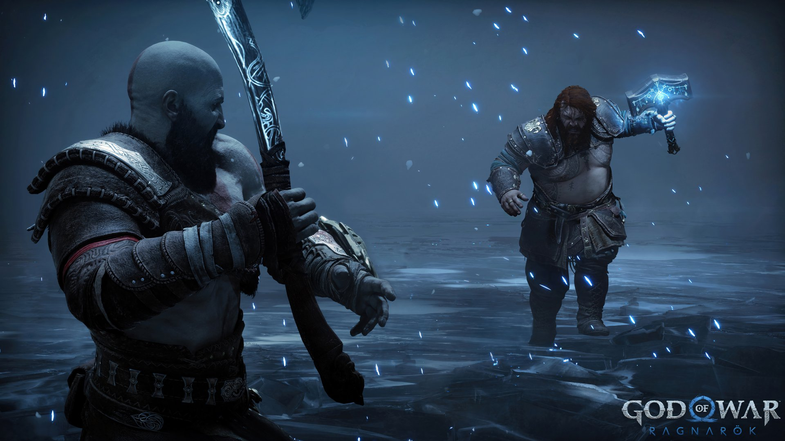
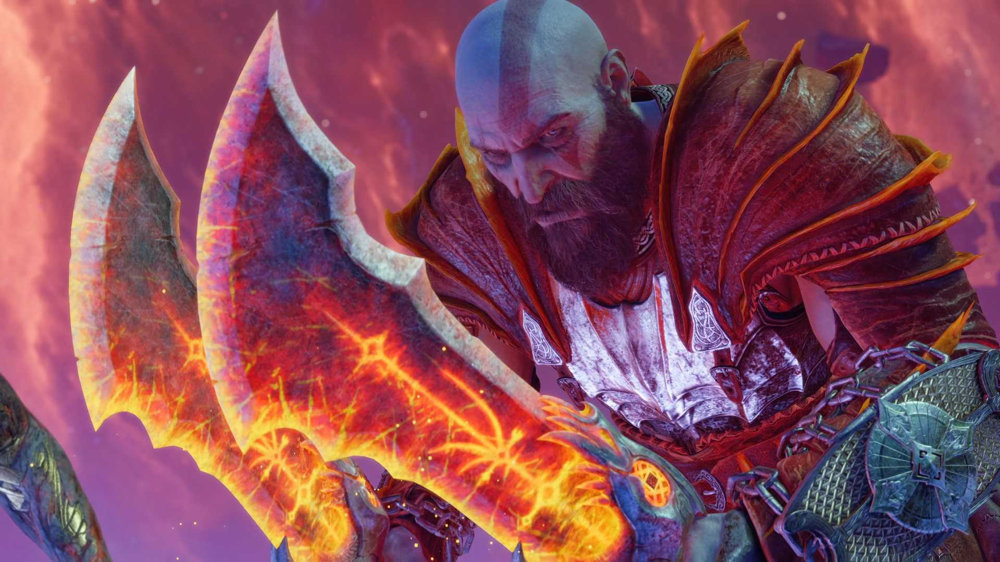

Game Zone
Encyclopedia for Gamers
God of War Ragnarök
Screenshots
  
About Game
God of War Ragnarök is an action-adventure game developed by Santa Monica Studio and published by Sony Interactive Entertainment, released in 2022. It serves as a sequel to the critically acclaimed 2018 title, continuing the story of Kratos and his son Atreus in a richly woven narrative inspired by Norse mythology.
Setting and World
The game is set in the stunning realms of Norse mythology, including iconic locations such as Midgard, Asgard, and Vanaheim. Each realm is beautifully crafted with distinct environments, from snowy landscapes to lush forests, all teeming with mythical creatures and intricate details. The world is interconnected, allowing players to explore vast areas filled with secrets, puzzles, and engaging side quests.
Gameplay
In God of War Ragnarök, players control Kratos and Atreus as they navigate a tumultuous journey to prevent the onset of Ragnarök, the prophesied end of the world. The gameplay features a mix of brutal combat, platforming, and puzzle-solving. Kratos wields his iconic Leviathan Axe and Blades of Chaos, while Atreus uses his bow and magic to aid in combat and exploration. The game introduces new abilities and enemy types, enhancing the dynamic combat system and strategic depth.
Features
The game offers a deep and emotional narrative, focusing on themes of fatherhood, destiny, and the consequences of one’s choices. Players can upgrade weapons, armor, and abilities, allowing for personalized playstyles. The bond between Kratos and Atreus evolves throughout the story, impacting gameplay and interactions. Additionally, players encounter a variety of formidable bosses and mythological figures, each requiring unique strategies to defeat.
Graphics and Sound
God of War Ragnarök features breathtaking graphics, showcasing highly detailed character models and stunning environments that immerse players in the mythological world. The sound design complements the experience with a powerful orchestral score, voice acting that brings the characters to life, and immersive audio effects that heighten the intensity of battles and exploration.
Reception
The game received widespread acclaim for its compelling story, rich character development, and refined gameplay mechanics, earning numerous awards and accolades. Critics praised its emotional depth and visual artistry, establishing it as a landmark title in the action-adventure genre. Overall, God of War Ragnarök delivers an epic continuation of Kratos and Atreus’s journey, blending myth, action, and heartfelt storytelling into an unforgettable experience.